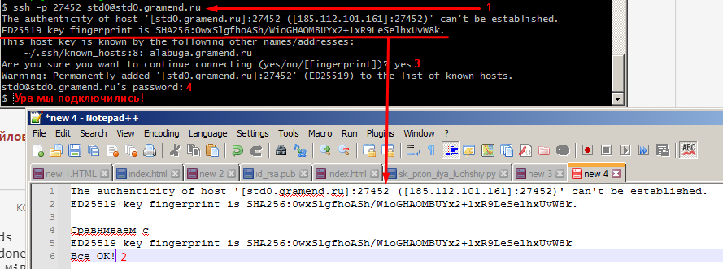
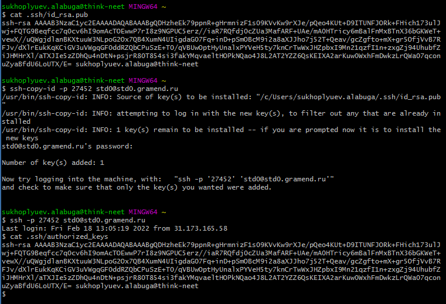
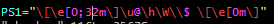
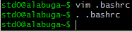
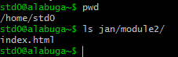
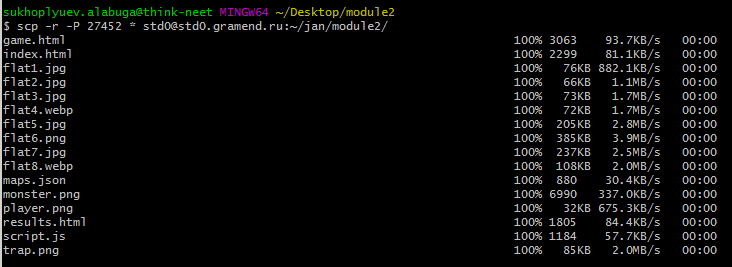
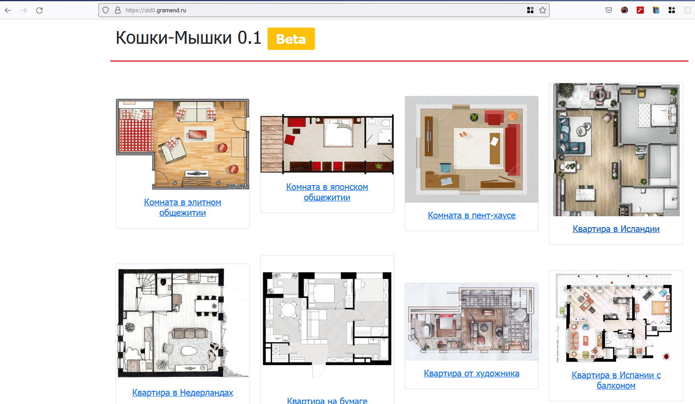

202202161616 Развертывание (deploy) статических файлов (HTML/CSS/JS) по SSH
Описание / Цель
Любой КОД (задание для ДЭ) для WorldSkills подразумевает полный цикл, то есть сделанный проект должен быть не просто сделан, а также выложен и доступен по какому-то адресу.
Любое развертывание проекта начинается с 1) Подключения к серверу 2) Копировании файлов на сервер 3) Настройки WEB сервера и WEB-приложения (если требуется)
В нашем случае, WEB-сервер пока настроен заранее, и сейчас мы на примере Модуля 2 рассмотрим как выложить наши статические файлы.
Что потребуется
- GitBash for Windows - имеет в коробке клиент ssh и сопутствующие утилиты.
- Данные для входа:
Hostname: std0.gramend.ruPort SSH: 27452(Сменен со стандартного22, чтобы избежать лишних случайных сканирований bot-программами)Username: std0Password: ***********- Папка куда нужно скопировать файлы:
/home/std0/jan/module2/
Шаги
Подключение к серверу

- Используем команду
ssh, чтобы подключится:-p- указываем TCP-порт на котором работает SSH сервер- до
@указывается имя пользователя - после
@указывает имя сервера - Для деталей лучше выучить полную схему URL
- Сверяем отпечаток ключа сервера, так мы проверяем что подключаемся туда куда нужно:
ED25519 key fingerprint is SHA256:0wxSlgfhoASh/WioGHAOMBUYx2+1xR9LeSelhxUvW8k - Если все верно, пишем
yes - И попадаем в терминал
- Выйти можно по сочетанию клавиш
^D/ctrl+D
Подключение к серверу без пароля
Чтобы подключаться по SSH без ввода пароля, можно скопировать свой публичный ключ
.ssh/id_rsa.pub в .ssh/authorized_keys на сервер. Также для этого можно
воспользоваться утилитой ssh-copy-id:

[Дополнительно] Настройка терминала сервера
Полезно настраивать переменные окружения Shell, среды. Одна из таких - PS1,
которая отвечает за строку-приглашение. Как минимум,
полезно делать имя пользователя/компьютера разными цветами, чтобы случайно
не перепутать сервера, с которыми ты работаешь.
Делается это, с помощью файла .bashrc, который выполняется при входе:


Копирование статических файлов
- Проверяем что папка существует (если нет, придется её создать
mkdir -p):

- Пользуемся
scp, чтобы скопировать файлы:

Проверка
Заходим на std0.gramend.ru, вводим те же имя пользователя и пароль (HTTP базовая авторизация)
и убеждаемся, что все работает:

Заметки
- Стоит сделать какой-то скрипт для автоматической загрузки страницы на HTTP-сервер, чтобы быстро исправлять ошибки и перезагружать новую версию на сервер.
- Можно даже сделать это при коммите, например (Совет для WorldSkill!, в реальной жизни авто-деплой стоит реализовывать сложнее)